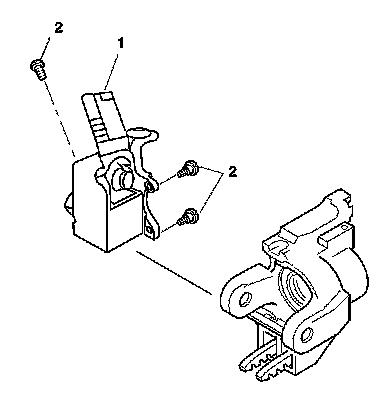

Ignition Lock Cylinder Case Replacement
Ignition Lock Cylinder Case Replacement
Removal Procedure

Caution: Refer to SIR Caution (SIR Caution) .
1. Disable the SIR system. Refer to SIR Disabling and Enabling (Service and Repair) .
2. Remove the turn signal cancel cam and upper bearing. Refer to Turn Signal Cancel Cam and Upper Bearing Inner Race Replacement (Turn Signal Cancel Cam and Upper Bearing Inner Race Replacement) .
3. Remove the theft deterrent control module. Refer to Theft Deterrent Module Replacement (Service and Repair) .
4. Remove the ignition lock cylinder. Refer to Ignition Lock Cylinder Replacement (Ignition Lock Cylinder Replacement) .
5. Remove the ignition switch assembly. Refer to Ignition and Start Switch Replacement (Service and Repair) .
6. Remove 3 pan head tapping screws (2) from the ignition lock cylinder case assembly (1).
Remove the ignition lock cylinder case from the steering column.
Installation Procedure
1. Align the ignition lock cylinder case assembly (1) with the steering column tilt head assembly.
Notice: Refer to Fastener Notice (Fastener Notice) .
2. Secure the ignition lock cylinder case assembly (1) to the steering column using 3 pan head tapping screws (2).
Tighten the screws to 7 N.m (62 lb in).
3. Install the ignition switch assembly. Refer to Ignition and Start Switch Replacement (Service and Repair) .
4. Install the ignition lock cylinder. Refer to Ignition Lock Cylinder Replacement (Ignition Lock Cylinder Replacement) .
5. Install the theft deterrent control module. Refer to Theft Deterrent Module Replacement (Service and Repair) .
6. Install the turn signal cancel cam and upper bearing. Refer to Turn Signal Cancel Cam and Upper Bearing Inner Race Replacement (Turn Signal Cancel Cam and Upper Bearing Inner Race Replacement) .
7. Enable the SIR system. Refer to SIR Disabling and Enabling (Service and Repair) .